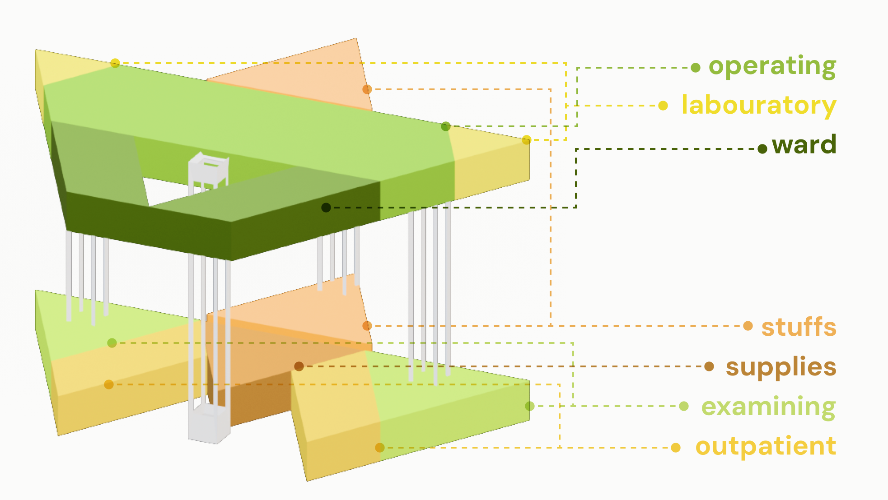
01 Spatial System
Separated routes and readable zoning
Pet, owner, staff and emergency circulation are organized to reduce cross-traffic, noise and unnecessary contact during treatment.
Animal-Centered Service & Spatial Design
The project reframes veterinary care through pets' sensory and emotional experience, connecting low-stress spatial planning, clearer treatment feedback and pet-friendly waiting furniture.

A veterinary clinic proposal that shifts the design focus from human convenience to the sensory, behavioral and emotional needs of pets.
Academic Project / Animal-Centered Service & Spatial Design
Research synthesis, service strategy, flow and spatial planning, interface concept, furniture design and 3D visualization
2025
Clinic system proposal, spatial model, waiting furniture, operating-room display and design report
Blender, service blueprinting, spatial modeling, paper prototyping and rendering
China Academy of Art, Art & Technology Academic Project
This is a spatial and service design proposal developed through research, modeling and prototype iteration. It has not been built as a full-scale veterinary clinic.
The final proposal combines separated circulation, visible treatment information and pet-specific waiting furniture into one coordinated care experience.


Pet, owner, staff and emergency circulation are organized to reduce cross-traffic, noise and unnecessary contact during treatment.
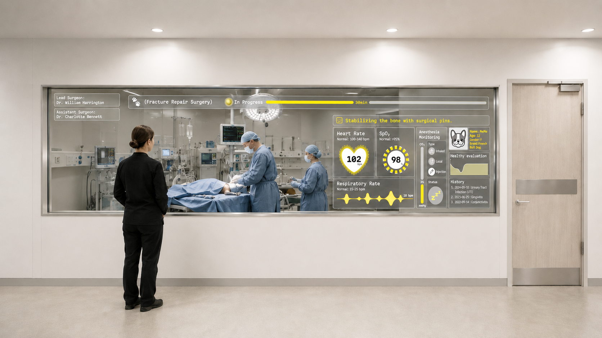
An external operating-room display communicates surgery progress, vital signs and basic health information to reduce uncertainty for owners.
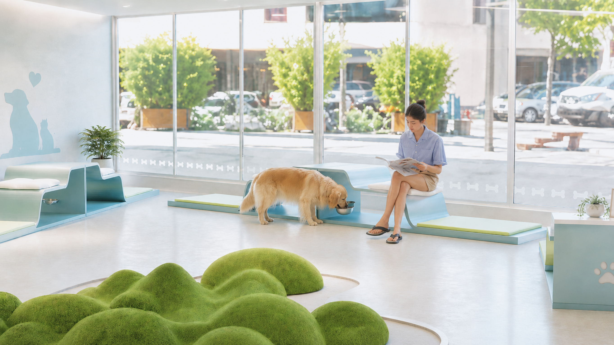
Furniture integrates human seating with low, sheltered resting zones so pets can remain close to their owners without being fully exposed.
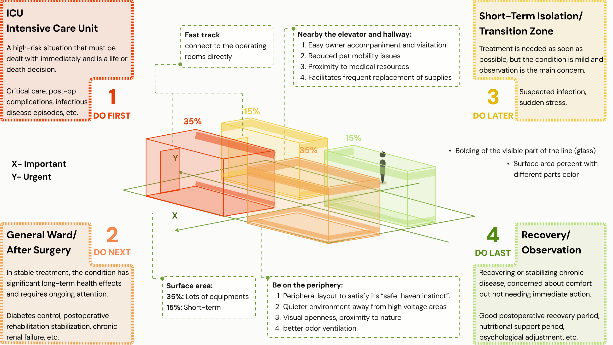
Critical care, postoperative recovery, isolation and observation areas are allocated according to urgency, supervision needs, circulation and environmental comfort.
Existing clinic layouts often prioritize operational convenience while overlooking how animals respond to noise, crossing routes, separation and unfamiliar procedures.
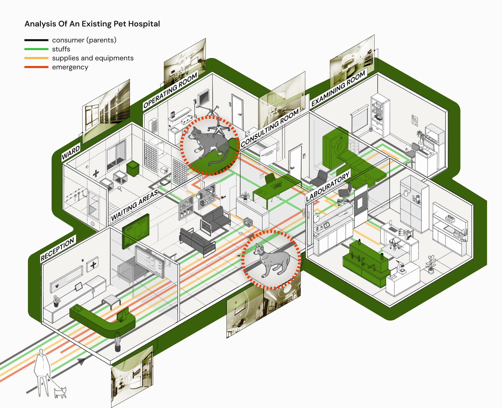
Pets, owners, staff and emergency movement overlap, increasing confusion and stress.
Open waiting and treatment areas offer limited acoustic control or protected retreat.
Owners receive little process feedback while pets are separated for treatment.
Human-scaled seating rarely supports pet posture, sensory comfort or proximity needs.
The design translates animal-centered care into spatial, emotional and informational decisions.
Reduce stress through quieter routes, lower exposure, softer materials, calmer lighting and protected resting positions.
Keep pets and owners visually or physically connected where possible, while creating moments of reassurance during separation.
Use clear status information and readable service touchpoints to make care feel more understandable and less uncertain.
Six veterinary and animal-care precedents were compared across spatial organization, circulation and furniture, then translated into a shared design criteria system.
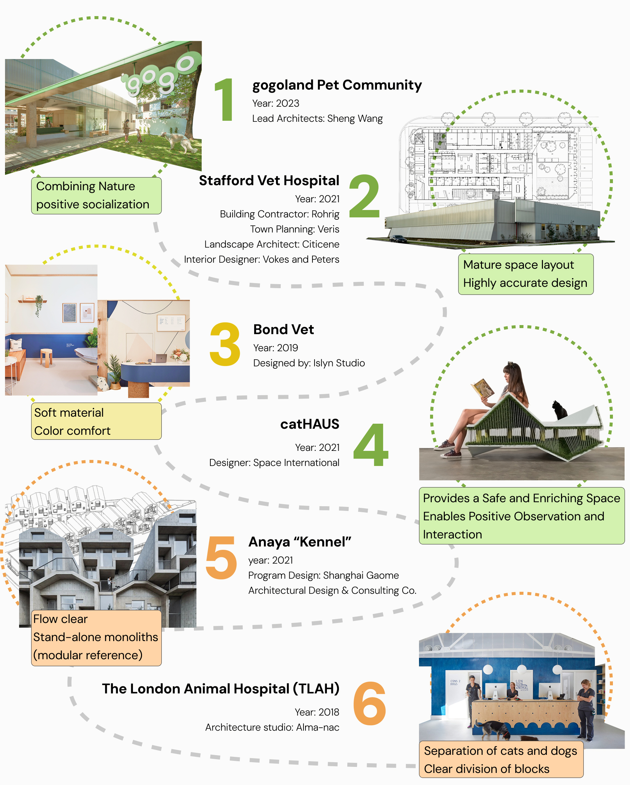
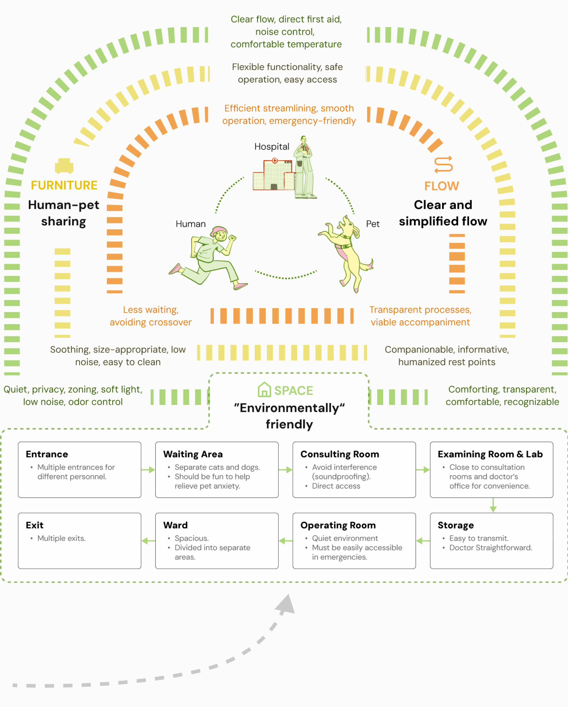
Quiet zoning, visual retreat, pet separation and environmental comfort.
Clear circulation, direct first aid, reduced crossover and emergency access.
Human-pet sharing, safe scale, soft contact and protected positions.
Triangular modules were iterated to create clearer zoning, shorter treatment routes and more independent circulation for pets, owners, staff and emergencies.
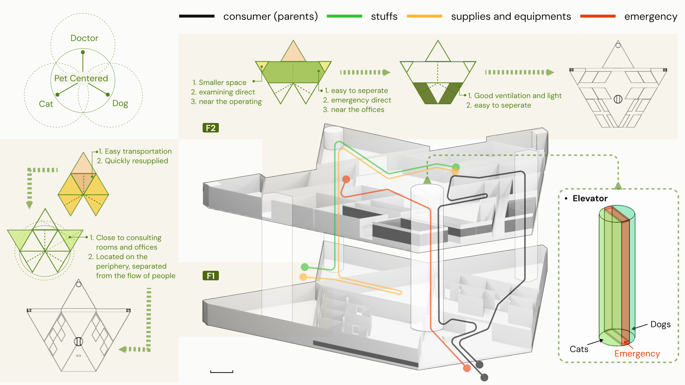
Consulting, examination and operating areas are connected through shorter treatment routes.
Staff, pet, owner and emergency paths remain legible and less likely to intersect.
Elevator access is divided by cats, dogs and emergency use to reduce conflict and delay.
Two paper-prototype rounds were used to test spatial allocation, waiting-area separation, operating-room visibility and vertical circulation before the digital model was refined.
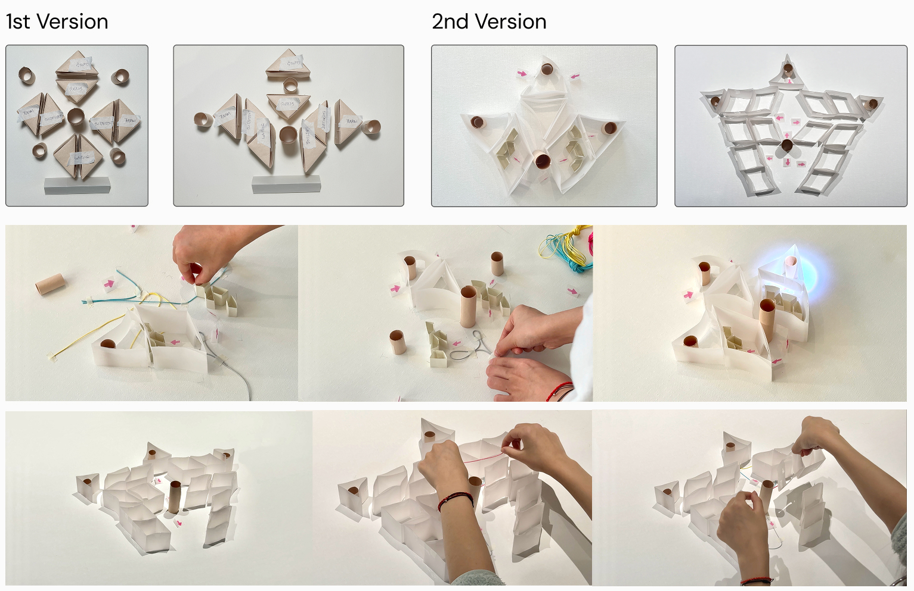
The plan was reorganized into clearer functional zones and more legible treatment connections.
Pet routes and waiting positions were refined to reduce acoustic and visual conflict.
Visibility was shifted toward filtered information and selective glazing rather than full exposure.
Furniture scale, posture, material and information feedback support a calmer waiting and treatment experience.
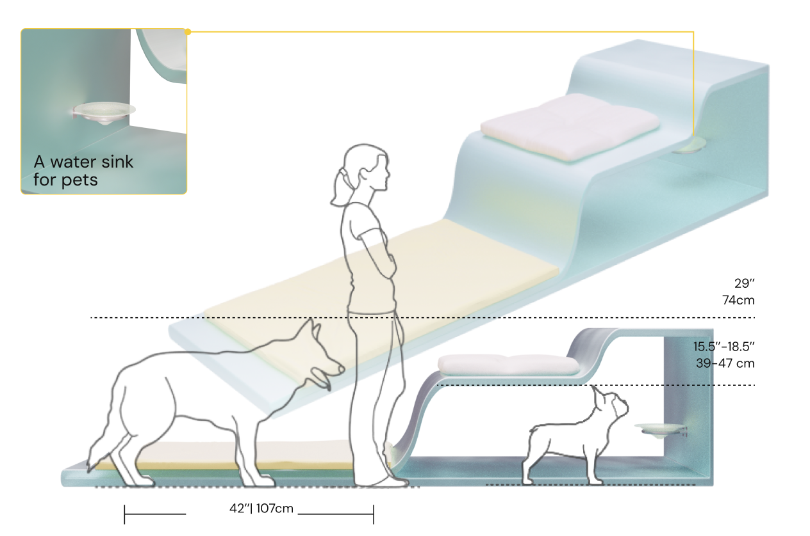
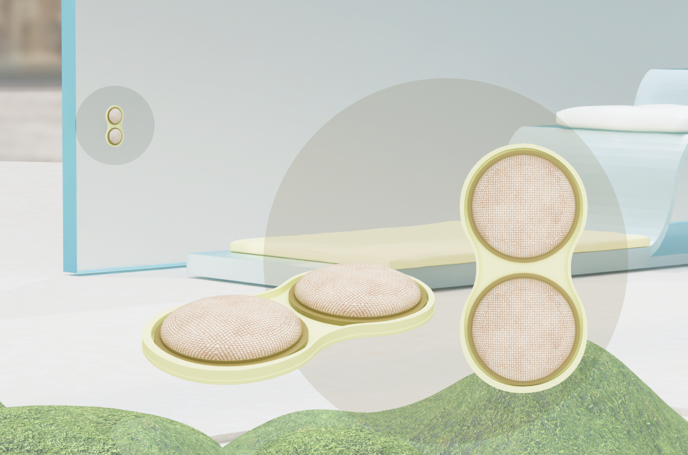
This project helped me connect service logic, spatial planning, information design and physical touchpoints around one non-human user's experience.
The proposal is based on research and prototype iteration; further development would require veterinary, behavioral and architectural validation.
A future phase could test full-scale waiting modules, validate circulation with clinic staff and develop the operating-room information interface as an interactive prototype.